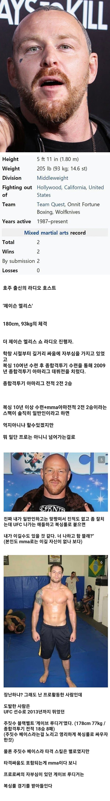
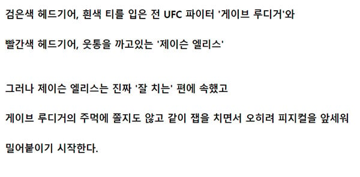
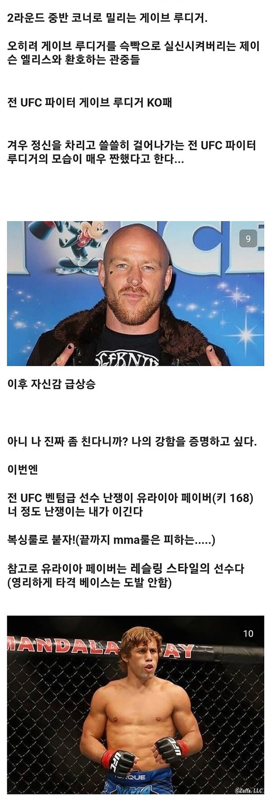
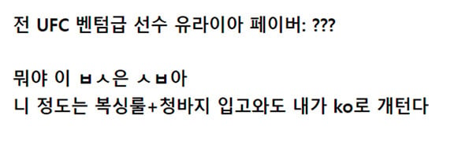
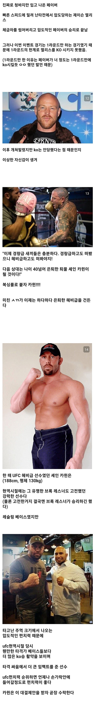
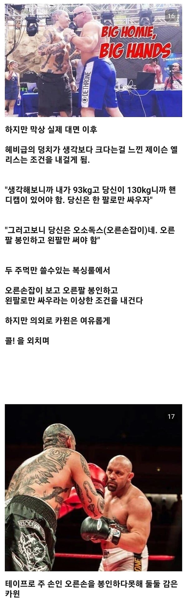
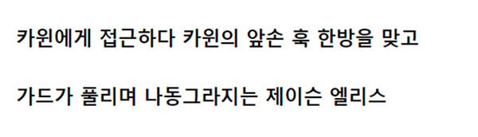
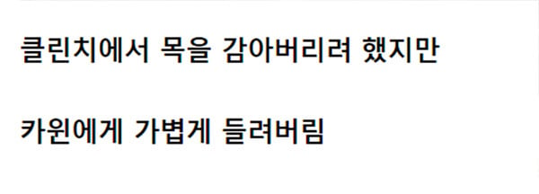
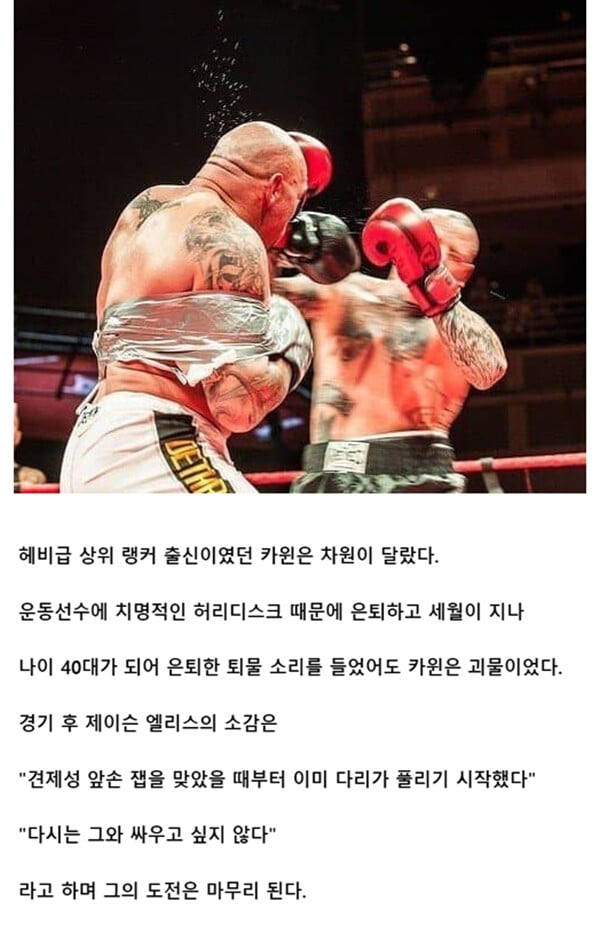

바이오닉출신은 없음?
임요환
역시 테란이 유리해
주먹왕 랄프네 ㅋㅋㅋ
손이작아 슬프군
장난감 돼버리네 ㄷㄷ
손크기 보니까 주먹뼈가 머리뼈보다 단단하겠다 ㅋㅋㅋㅋㅋ
ㅅㅂ 저건 나대면 좆되는 피지컬이잖아 빡대가리년이
마지막은 살짝 툭 친 것 같은데 그대로 넘어가 버리네 ㅋㅋ 대박이다 ㅋㅋ
그래도 한명은 잡았자뉴
페이버는 레슬링 베이스지만 훌륭한 타격실력도 가진 전천후 웰라운더 탑클래스 선수였고 카윈은 헤비급 역사상 최강 빠따로 유명한 피니쉬 머신이었음
루디거는 수준낮은 웰라운더에 기량이 유지되고 있는 선수가 아니라 ufc 하위권에서도 연패끝에 퇴물당한 은퇴선수라 복싱룰로 이기는게 가능한거임
실제로 복싱룰이라는게 mma선수들이 적응하고 싸우는거에 굉장히 어려워 함 적응도 오래걸리고
복싱10년 수련이라기엔 한달에 한번 나갔나본데?
그래도 카윈한테 맞고 살아있는거 보면 인자강이네ㅋㅋㅋㅋㅋㅋㅋ
아니 근데 진짜 툭, 하고 친거 같은데? 억 ! 하고 넘어가네
더 하면 안되겠다 싶어서 가장 약한거 맞고 넘어간 느낌이야 ㅋㅋㅋㅋㅋㅋㅋㅋㅋㅋ
와.. 작은 빡빡이도 장난아닌데 큰 빡빡이는 종이 다른 느낌
중량급들은 선수생명도 길던데 40살에 챔프먹은 테세이라 같은 경우도 있고.. 너무 겁없이 덤볐네
근대 10년 수련한새끼가 일반인이란건 좀 ㅋㅋㅋㅋ
프로야 물론 재능의 영역이라지만
프로중에 10년수련 안한 애들도 믾을거같은데
카윈을 잘 몰랐나 알았으면 그냥 메카닉출신 인자강인데